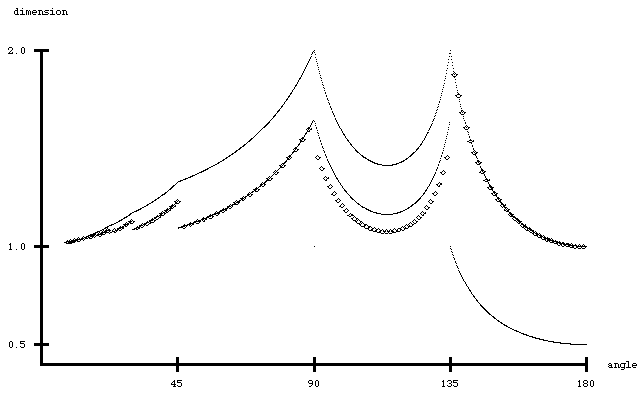

There are three obvious fractals associated with these trees:
the set of branch tips, the canopy, and the shortest path.
The canopy is the set of branch tips that can be reached by a path from far away without touching any other part of the tree.
The shortest path is the path in the tree from the branch tip (LR)infinity to the branch tip (RL)infinity.
The graph below shows the dimesnion of the branch tips (top curve), the canopy (bottom curve), and the shortest path (small circles).
|  |
| Here is a sketch of the steps in deriving this graph. |
Return to Fractal Trees.